Resource-Efficient sEMG-Driven Prosthetic Arm
Development of a Low-Cost Intelligent Transradial Prototype Using Sparse Surface EMG and Edge-Deployed Deep Learning
End-to-end design, development, and mechatronic validation of an accessible, intelligent transradial prosthetic arm that executes deep learning intent classification directly on a commodity bare-metal microcontroller (ESP32-S3). By transitioning inference from power-intensive single-board computers (Raspberry Pi, Jetson Nano) to bare-metal hardware and pairing an anatomically justified three-channel sensor array with analog signal conditioning, this project delivers responsive, multi-articulating bionic control within a strict, affordable fabrication budget.
B.Sc. in Electrical and Electronic Engineering
Associate Professor, Dept. of EEE
Myo-Neuro Intelligence Laboratory (MNIL)
Jashore University of Science and Technology (JUST)
Scientific Integrity & Methodological Scope
This research manuscript has been finalized and is prepared for upcoming submission to a peer-reviewed biomedical journal. In strict compliance with standard prior-publication policies and non-disclosure requirements, all experimental outcome metrics, exact benchmark accuracy comparison tables, per-subject test scores, and detailed confusion matrices are intentionally withheld.
Continuous Real-Time Gesture Mimicry
Demonstration of live, continuous physiological gesture replication. As the participant voluntary activates forearm muscles, surface action potentials are captured, differentially conditioned at the analog front-end, digitized at a deterministic 1000 Hz, and classified in real time by the on-device 1D-CNN. The predicted discrete state is filtered through a temporal majority-vote queue to actuate corresponding tendon-driven mechanical digits.
End-to-End Operational Pipeline
3-channel sparse array (FCR, BR, ED) with hardware differential gain, rectification, and analog envelope smoothing.
Deterministic 1000Hz ADC polling, global z-score scaling, and unquantized 1D-CNN execution via TFLM in 128kB static SRAM.
20-sample majority-vote filter driving 5 servos via PCA9685 I2C for jitter-free tendon-actuated finger postures.
Problem Statement & Research Methodology
Upper-limb loss represents an escalating global health challenge, with the worldwide prevalence of physical impairments expanding by 49.2% between 1990 and 2019. In developing nations, traumatic transradial amputations occur frequently from industrial machinery and vehicular accidents, yet accessible prosthetic rehabilitation remains out of reach due to a profound technological divide.
Commercial multi-articulating bionic hands offer advanced dexterity but cost $20,000 to $80,000+, demanding proprietary servicing. Conversely, affordable options are limited to body-powered hooks or cosmetic passive hands, resulting in user abandonment rates exceeding 30%.
Research literature has demonstrated high pattern recognition accuracy, but models overwhelmingly depend on high-density sEMG arrays (16–64 channels) and power-hungry desktop GPUs or Linux SBCs (Raspberry Pi, Jetson Nano) that consume multi-watt continuous power and introduce boot latency.
Bridge this divide by creating a completely untethered, standalone prosthetic prototype costing under $150 that executes modern deep learning on a bare-metal microcontroller (ESP32-S3) using a minimal 3-channel sparse sensor footprint with analog signal conditioning.
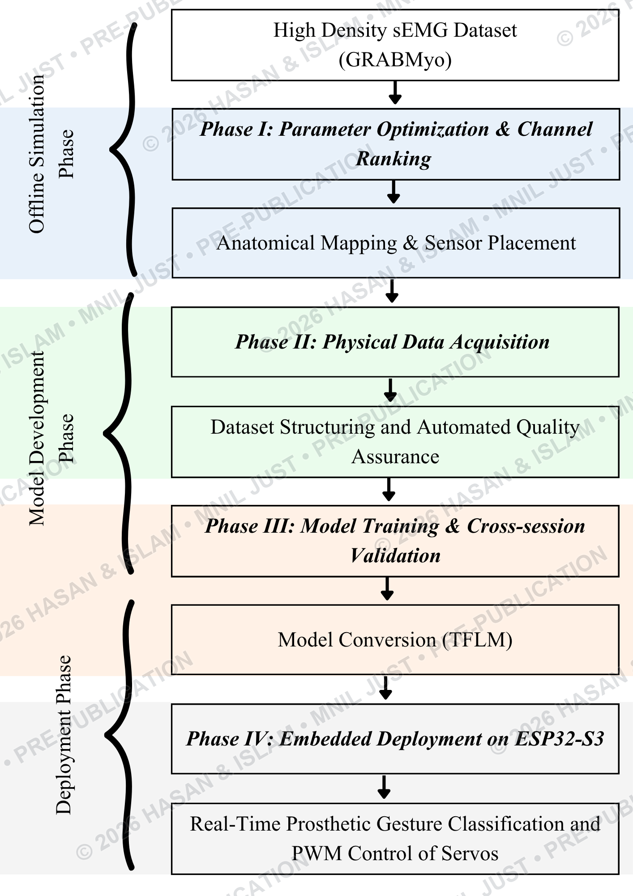
Fig 1.1: Complete methodological workflow detailing the progression from parameter selection and participant data acquisition to offline model optimization and live embedded deployment.
| Study | Channels | Model | Platform & Latency | Physical Actuation | Cohort Validation |
|---|---|---|---|---|---|
| Atzori et al. (2016) | 10 & 12 | 2D-CNN | Desktop GPU (<1 ms forward pass) | Offline Ninapro (67 AB / 11 AP) | |
| Tavakoli et al. (2017) | 1 | SVM | Custom MCU (~10 ms inference) | 3 Able-Bodied | |
| Tam et al. (2020) | 32 (HD-sEMG) | CNN | Jetson Nano (0.88 ms inf; 100-200 ms total) | Able-Bodied Offline | |
| Triwiyanto et al. (2022) | 2 | Decision Tree | Raspberry Pi 3B+ (~1 ms inf; 100 ms total) | 10 Able-Bodied | |
| Kim et al. (2023) | 8 | CRNN | Jetson Nano / ROS (1s window @ 50Hz) | 11 Able-Bodied | |
| Rafiq et al. (2024) | 5–7 | DNN (INT8) | Arduino Nano 33 BLE (~1 ms inf; 100 ms total) | 1 Able-Bodied | |
| This Thesis Prototype | 3 (Sparse) | 1D-CNN + GAP | ESP32-S3 (18.5 ms inf; 165.7 ms pipeline) | 20 Able-Bodied Cohort |
End-to-End System Hardware Architecture
The prototype is structured into three physically and galvanically distinct operational domains to resolve the critical engineering challenge of executing sensitive microvolt biological sensing in close proximity to high-current motor actuators.
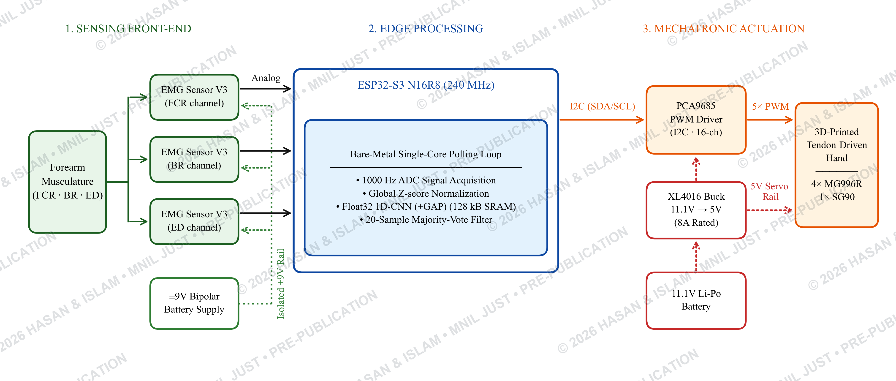
Fig 2.1: Tri-domain physical mapping illustrating the bipolar battery supply, analog conditioning, ESP32-S3 polling loop, and PCA9685 servo actuation bus.
Three Advancer Technologies EMG Sensor V3 modules powered by a dedicated ±9V dual-rail battery supply. Modules perform differential instrumentation amplification, full-wave rectification, and analog low-pass filtering. Outputs pass through passive voltage-divider networks to safely scale the signal below 3.3V for the ESP32-S3 ADC.
ESP32-S3 N16R8 development board (Xtensa 32-bit LX7 dual-core @ 240MHz). Executes a single-core polling loop utilizing hardware microsecond timers for jitter-free 1000Hz sampling. Hosts a 128kB static SRAM tensor arena running unquantized Float32 inference via TensorFlow Lite for Microcontrollers (TFLM).
Dedicated 11.1V 3S LiPo battery stepped down to 5V via a high-current XL4016 buck converter (8A continuous rating). A PCA9685 16-channel 12-bit PWM driver communicates over I2C, offloading hardware pulse generation and driving 4x MG996R metal-gear servos and 1x SG90 micro servo.
Simultaneous actuation of multiple high-torque servos draws surge currents exceeding 5A during dynamic grip transitions. In unisolated circuits, high transient return currents flowing through shared ground paths cause severe ground bounce, introducing voltage fluctuations that overwhelm microvolt-level biopotentials and trigger brownout resets on the microcontroller.
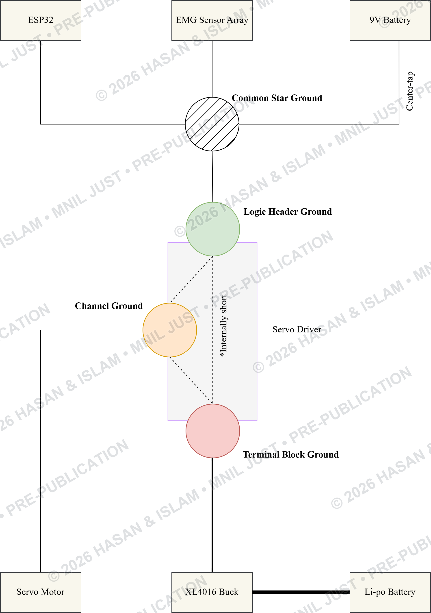
Strict separation of high-current motor ground return from analog biopotential ground, converging at a single physical node.
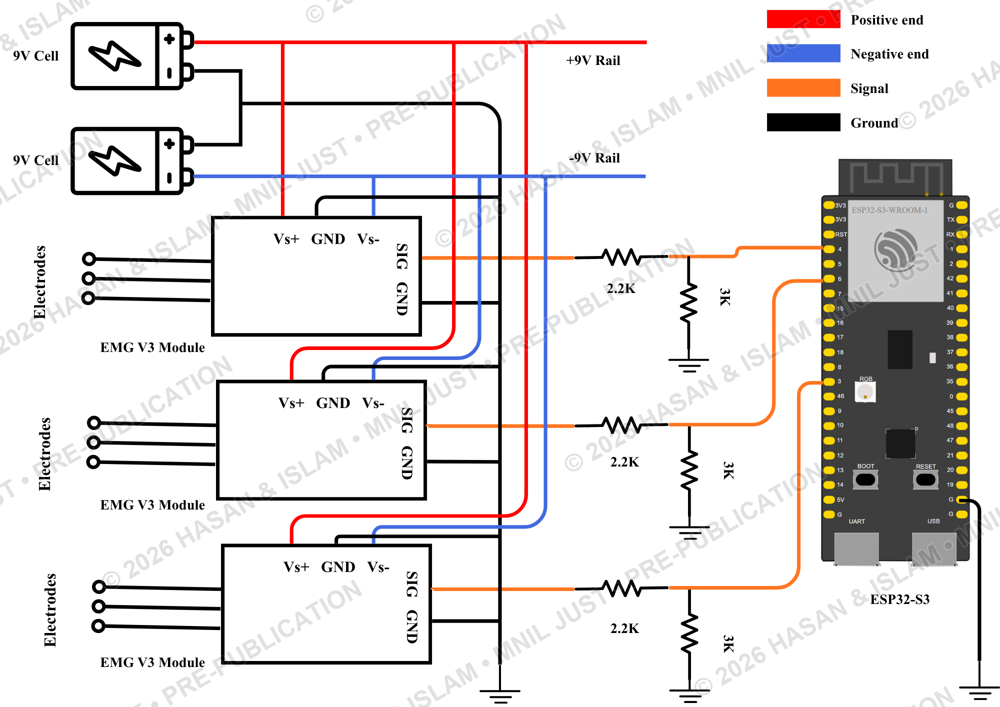
±9V supply & ADC scaling dividers.
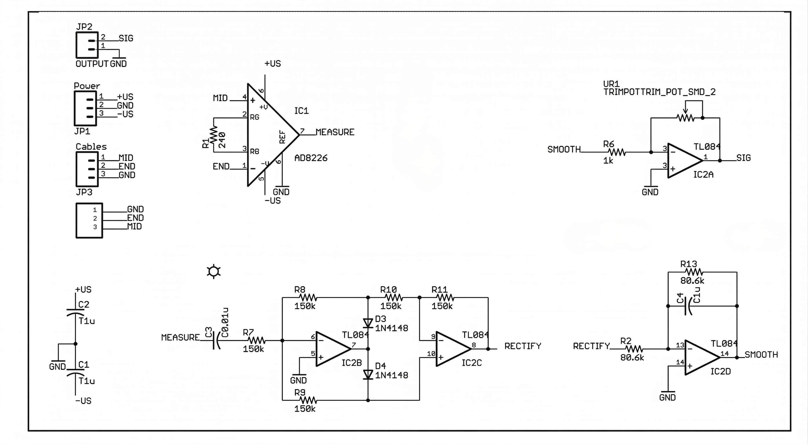
Differential gain & analog envelope.
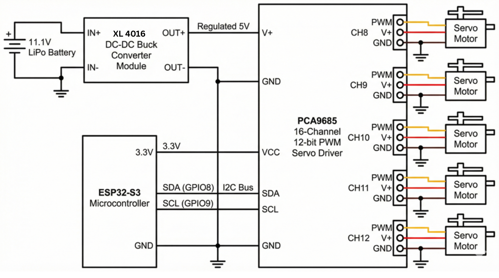
PCA9685 PWM & XL4016 buck rail.
Biomechanical Foundation & Sensor Placement
Surface Electromyography (sEMG) captures the non-stationary bioelectrical summation of Motor Unit Action Potentials (MUAPs) generated during voluntary muscle activation. To avoid the computational bandwidth and component expense of high-density arrays, an anatomically targeted sparse 3-channel electrode triad was engineered to target three distinct functional compartments of the proximal forearm.
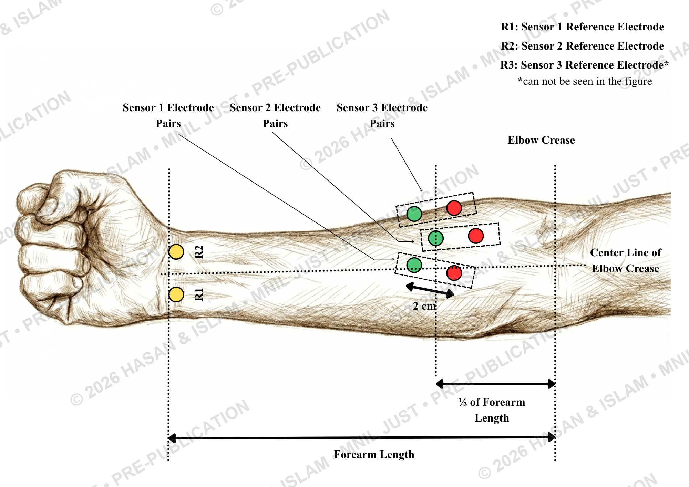
Fig 3.1: Targeted electrode locations following SENIAM guidelines with 20mm inter-electrode distance.
| Sensor | Target Muscle | Anatomical Compartment | Functional Role & Target Kinematics |
|---|---|---|---|
| Sensor 1 | Flexor Carpi Radialis (FCR) | Volar (palmar) aspect | Strongly co-activated during wrist flexion and cylindrical power grasping (Hand Close). |
| Sensor 2 | Brachioradialis (BR) | Lateral aspect (mobile wad) | Forearm stabilizer providing essential contextual bioelectrical data during distal hand movement. |
| Sensor 3 | Extensor Digitorum (ED) | Dorsal mid-forearm | Principal extensor of the digits; drives Hand Open and individual finger extension gestures. |
| Reference | Styloid Process of Ulna | Distal bony prominence | Electrically neutral reference point establishing a clean common-mode differential voltage baseline. |
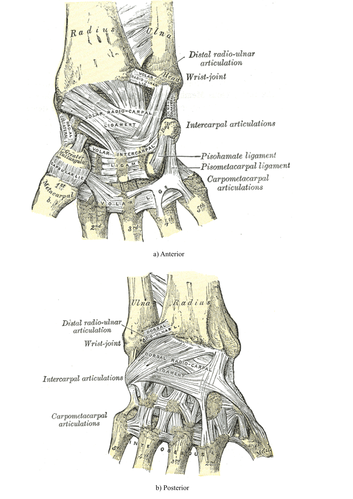
Fig 3.2: Anatomical DoFs: thumb carpometacarpal saddle opposition and phalangeal flexion axes replicated by the under-actuated bionic hand.
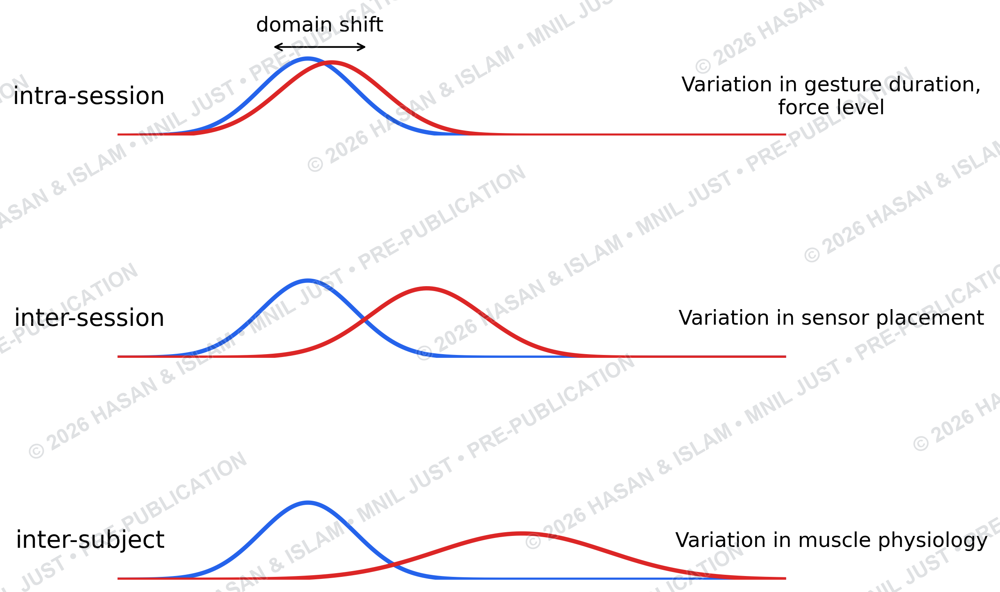
Fig 3.3: Theoretical manifestation of domain shift across intra-session, inter-session, and inter-subject testing regimes.
Functional Gesture Vocabulary (ADL-Aligned)
The system targets a six-class kinematic vocabulary formulated to span the foundational grasping postures cataloged in standard Activities of Daily Living (ADL) taxonomies. Confining the vocabulary to six discrete states ensures viable real-world utility while respecting the information entropy bounds of a 3-channel sparse array.
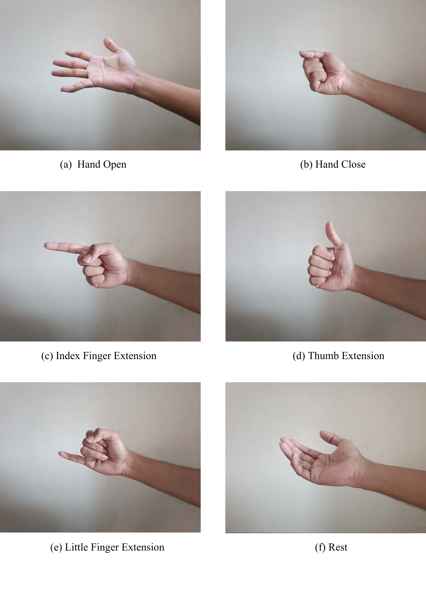
Fig 4.1: Six target kinematic postures executed during data acquisition and replicated physically by the bionic hand.
Neutral baseline; prevents inadvertent robotic actuation.
Pre-grasp approach & object release posture.
Cylindrical power grip for load manipulation.
Directional pointing, typing, and button pressing.
Thumb opposition & precision pinch grips.
Fine motor discrimination & grasp balance.
Human-Subject Data Acquisition Protocol
A structured, reproducible physiological protocol was executed to ensure the deep learning models learn genuine neuromuscular motor commands rather than overfitting to single-session impedance conditions. Experimental procedures received institutional ethical approval from the Ethical Review Committee of the Faculty of Biological Science and Technology at JUST, adhering to the Declaration of Helsinki.
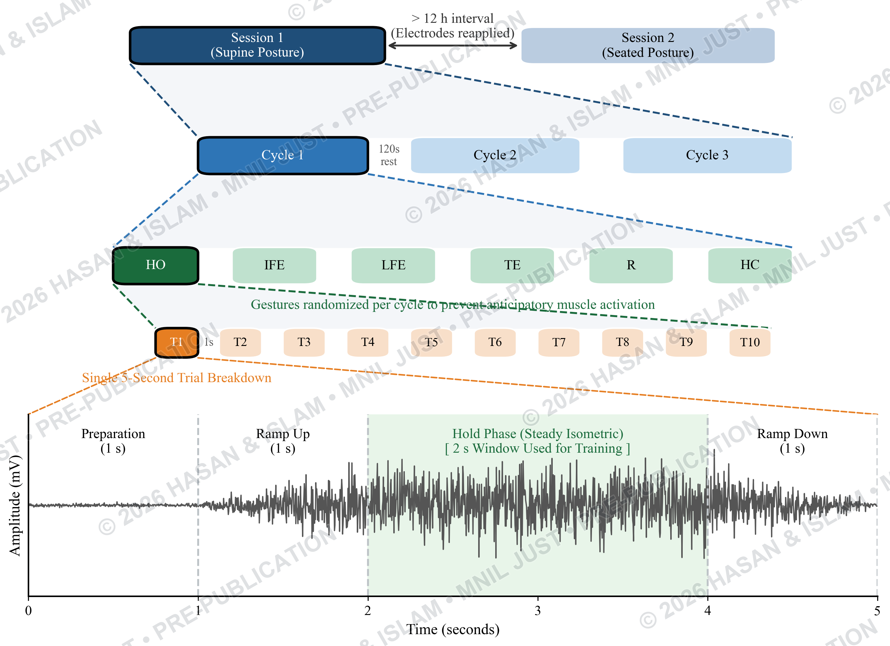
Fig 5.1: 4-phase trial sequence detailing the 1.0s cue preparation, 1.0s kinetic ramp, 2.0s sustained isometric hold, and 1.0s muscle relaxation.
20 healthy, right-hand-dominant male volunteers (aged 20–28 years). Strict exclusion criteria eliminated individuals with neuromuscular disorders, skin lesions, or electronic implants. Participants were anonymized as P01 through P20.
Data collection spanned 7 weeks. Each participant completed 2 independent sessions separated by a mandatory rest interval (≥ 12 hours; empirical median 87.5 hours) with complete electrode re-donning to naturally induce electrode shift.
Postural variance was introduced between sessions: Session 1 was captured in a supine (lying) orientation, and Session 2 in an upright seated posture, forcing the networks to learn orientation-invariant muscle activations.
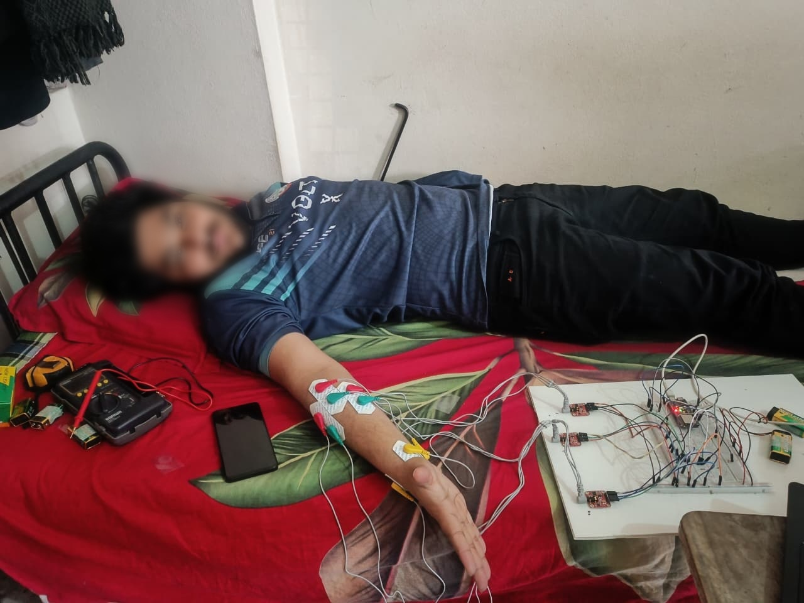
Captured in supine orientation to simulate relaxed resting positions.
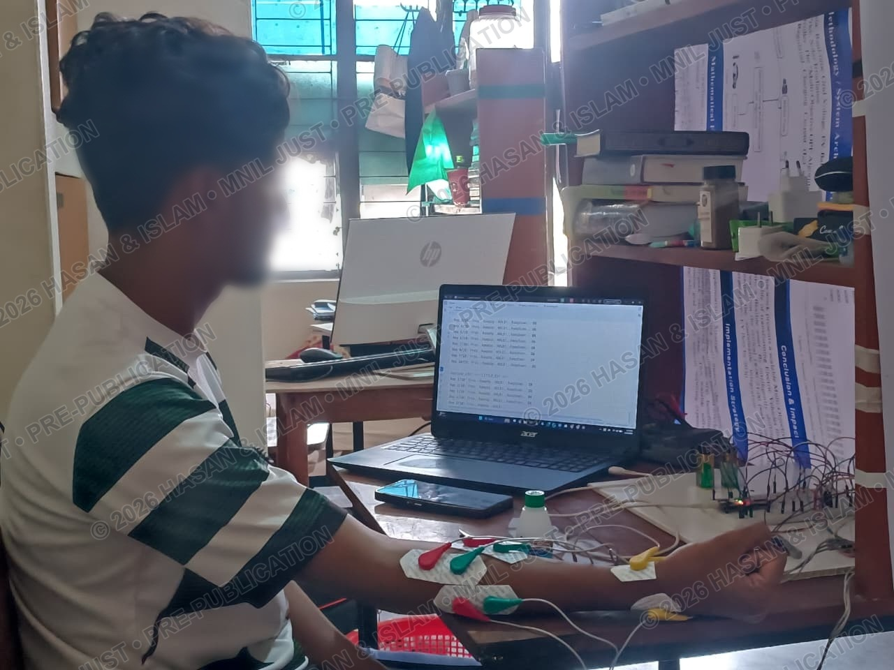
Captured in upright seated posture to introduce natural gravity-assisted muscle loading.
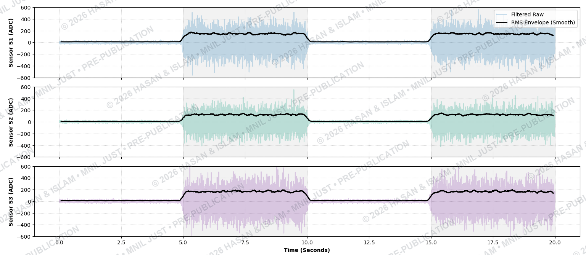
Visual check of multi-channel burst profiles before trial recording.
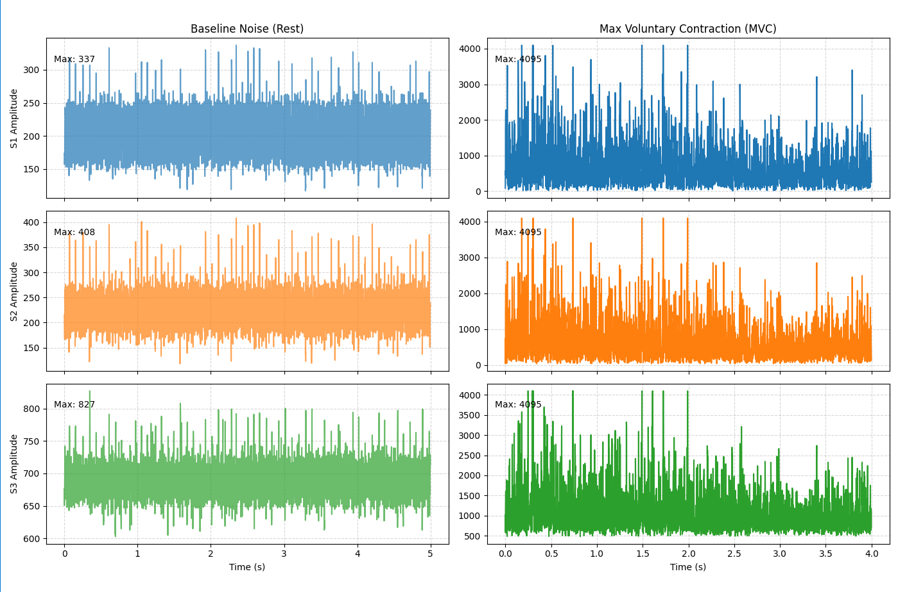
Noise floor recording & Maximum Voluntary Contraction bounds.
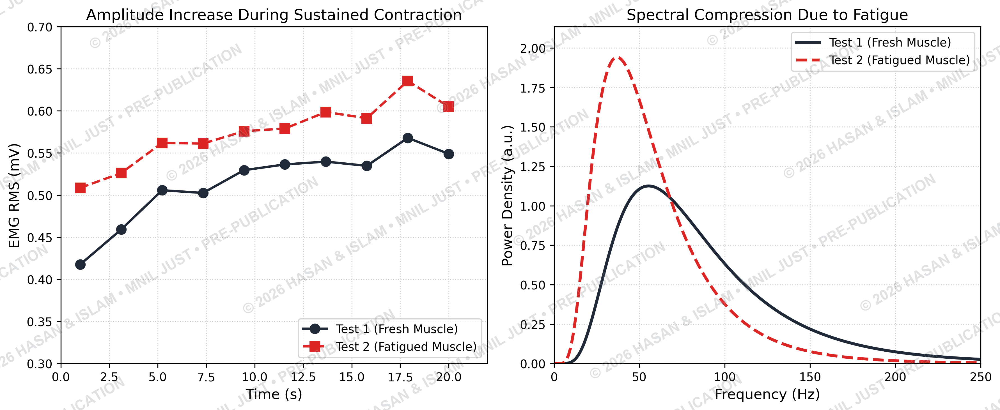
Spectral compression profile justifying 120s anti-fatigue pauses.
Standardized Hierarchical Dataset Architecture
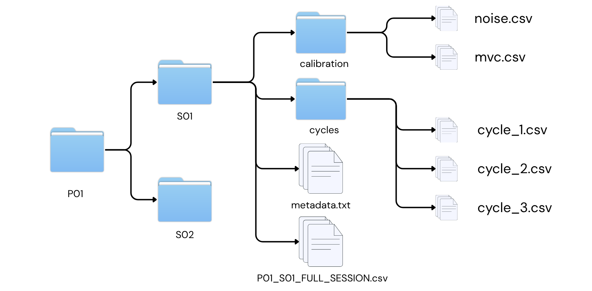
Strict separation of participant partitions (P01–P20), session folders (S01 supine, S02 seated), baseline files (noise.csv, mvc.csv), and active cycles (cycle_1.csv) guarantees offline reproducibility.
Automated Signal Quality Assessment (SQA)
Continuous sEMG recordings in unconstrained physical protocols are vulnerable to transient hardware artifacts (electrode peeling, lead wire tugs, rail clipping). Training deep neural networks on corrupted data forces filters to memorize hardware faults rather than voluntary motor intent. An automated Python-based Signal Quality Assessment (SQA) pipeline was implemented to screen every recorded trial prior to dataset compilation.
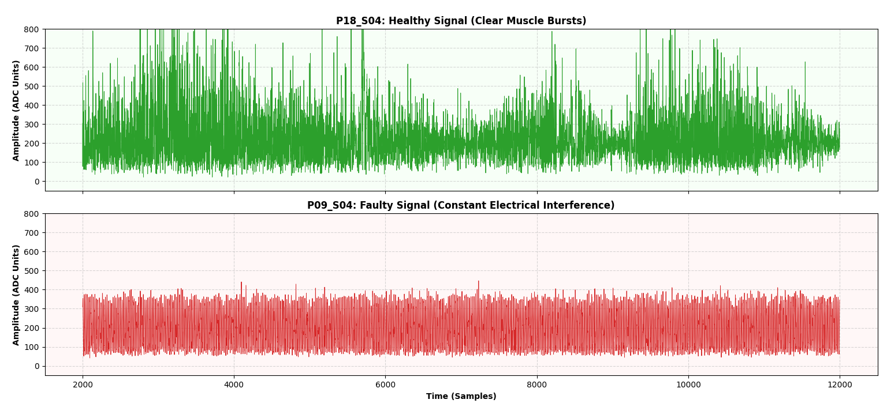
Fig 6.1: Healthy voluntary muscle contraction burst profile (top) contrasted against hardware recording failure exhibiting severe electrical saturation and clipping (bottom).
Flagged and discarded if > 2% of continuous samples hit the upper (4095) or lower (0) rail bounds of the 12-bit ADC, signifying severe voltage clipping.
Trials with per-channel variance < 1 × 10-6 were discarded, strictly indicating an uncoupled or severed electrode lead.
Trials where the ratio of active-contraction RMS to resting-baseline RMS fell below 1.0 were rejected as imperceptible contraction efforts.
Parsed trials containing fewer than 1500 unbroken samples were flagged to guarantee that a full 2.0-second isometric hold phase could be extracted without padding.
Signal Preprocessing & Minimal Filtering
Conventional myoelectric systems impose heavy digital signal processing (high-order Butterworth bandpass and notch filters) in software. However, running continuous digital IIR/FIR filter cascades on bare-metal microcontrollers consumes critical arithmetic clock cycles and introduces frequency-dependent group delays. This project implemented a deliberate minimal-filtering strategy.
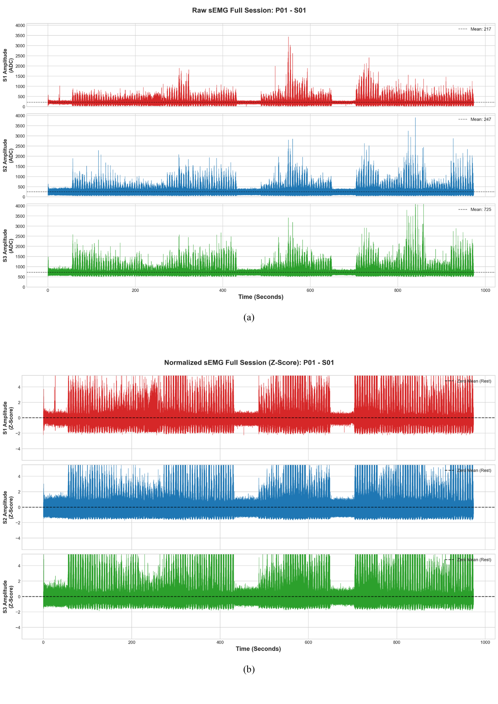
Fig 7.1: Transformation of raw ADC telemetry into zero-mean, unit-variance standardized tensors ready for convolutional inference.
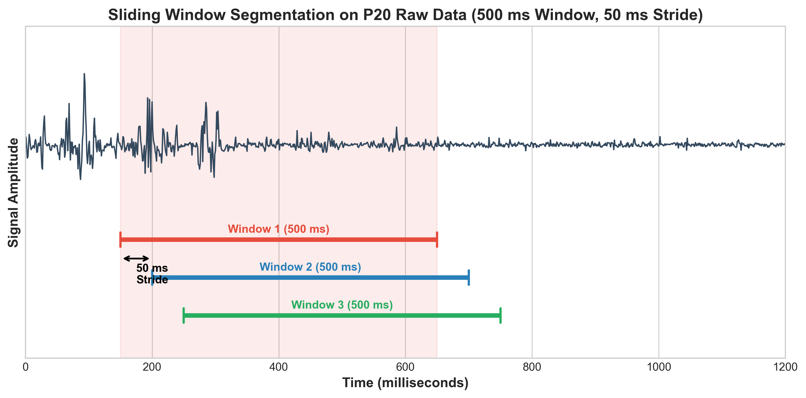
Fig 7.2: 300ms window with 50ms stride yields continuous updates at 20Hz.
The Advancer Technologies V3 modules inherently execute differential amplification, full-wave rectification, and low-pass smoothing in analog silicon. Secondary digital filters were completely bypassed, freeing the CPU from arithmetic filter loops.
A dynamic DC resting offset is subtracted, followed by global standardization: z = (x - μ_global) / σ_global. Global corpus parameters are compiled directly as immutable constants into the microcontroller firmware.
A sliding window of 300ms (300 samples @ 1000Hz) with 50ms stride (83.33% overlap) is mapped into a circular buffer. This feeds a fixed 300 × 3 tensor into the neural network every 50ms.
Deep Learning Architectural Exploration
Four neural network architectures of increasing structural complexity were implemented and benchmarked under identical multi-session data partitions to assess the inductive bias of different deep learning paradigms when operating on sparse sEMG temporal streams.
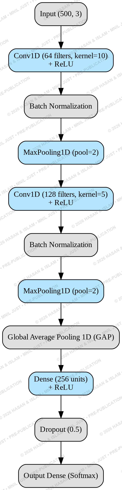
Fig 8.1: 1D-CNN feature extraction pipeline. Replacing conventional dense flattening with Global Average Pooling (GAP) reduced classification head parameters by ~97%.
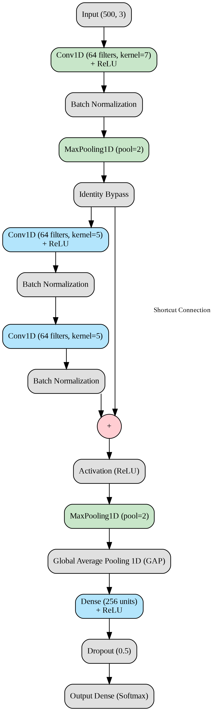
5 residual skip blocks (565k params).
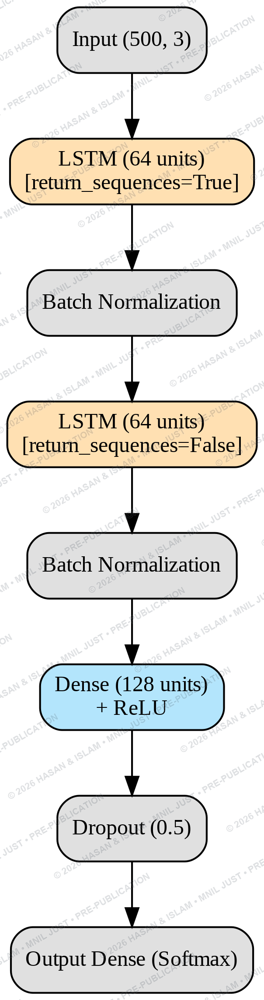
Stacked recurrent layers (117k params).
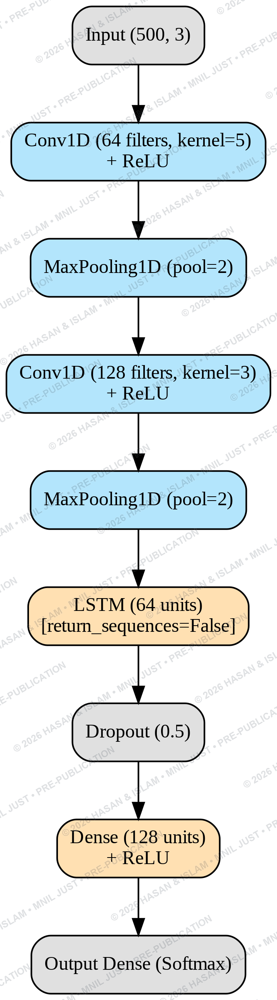
Conv1D + Bi-LSTM (102k params).
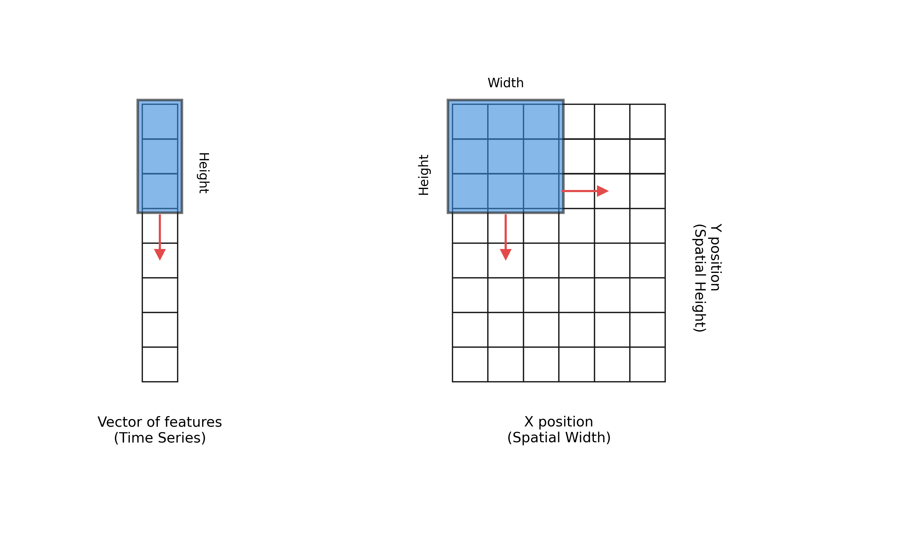
1D kernels slide exclusively across the 300-sample time series to extract temporal burst patterns.
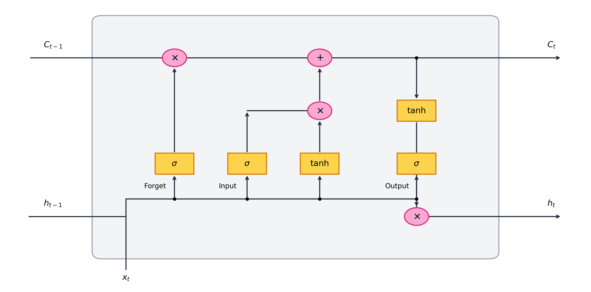
Gating mathematics: forget, input, and output gates regulating cell state updates.
η = 10^-3, β1=0.9, β2=0.999), sparse categorical cross-entropy, batch size 256, dropout rate 0.5, and early stopping with patience of 10 epochs. Random seed 42 enforced across all splits.
Bare-Metal TinyML Firmware & Execution
Deploying deep learning on wearable prosthetics requires absolute determinism. Standard single-board computers (Raspberry Pi, Jetson) running Linux introduce background kernel scheduling jitter, memory management faults, and continuous multi-watt battery drain. The 1D-CNN was compiled directly into native bare-metal C++ firmware for the ESP32-S3 microcontroller using TensorFlow Lite for Microcontrollers (TFLM).
| Hardware Parameter / Stage | Measured Value | Operational Architecture & Firmware Context |
|---|---|---|
| Serialized Float32 Model Size | 189 kB | Compiled as static C++ byte array in program flash; unquantized 32-bit floating-point preserves exact training decision boundaries. |
| Static Tensor Arena Allocation | 128 kB | Pre-allocated static SRAM array for TFLM intermediate tensors; strictly zero dynamic heap (malloc) calls prevents runtime memory fragmentation. |
| Forward-Pass Inference Latency | 18.5 ms | Single forward pass on ESP32-S3 hardware FPU; comfortably completes inside the 50ms sliding stride window. |
| Total Pipeline Latency | 165.7 ms | End-to-end duration encompassing 3-ch ADC acquisition, baseline subtraction, Z-score scaling, TFLM forward pass, and I2C PWM timer dispatch (< 200ms biomechanical threshold). |
| Sampling Determinism | ±2 μs Jitter | Deterministic single-core polling loop utilizing hardware micros() timer; zero missed sampling deadlines recorded across continuous runtime. |
Rather than relying on FreeRTOS tasks which induce task-switching jitter and mutex contention, the firmware operates in a tight polling loop. The internal hardware timer is polled continuously; when elapsed time reaches 1000 μs, the 3 ADC channels are sampled (requiring ~60 μs) and inserted into a rolling circular buffer.
Standard TinyML pipelines apply post-training INT8 quantization to satisfy micro-RAM budgets, introducing quantization noise. Because the GAP layer reduced parameters to 144k, the entire Float32 model fit easily within the 128kB SRAM arena, allowing native hardware floating-point acceleration without precision loss.
Mechatronic Kinematics & 3D Fabrication
The physical terminal device is an anthropomorphic, under-actuated 3D-printed hand. The skeletal CAD geometry was adapted in SolidWorks to integrate internal servo mounting chassis, wire routing channels, and wrist coupling. Additive manufacturing was performed in Polylactic Acid Plus (PLA+) on a Bambu Lab A1 3D printer.
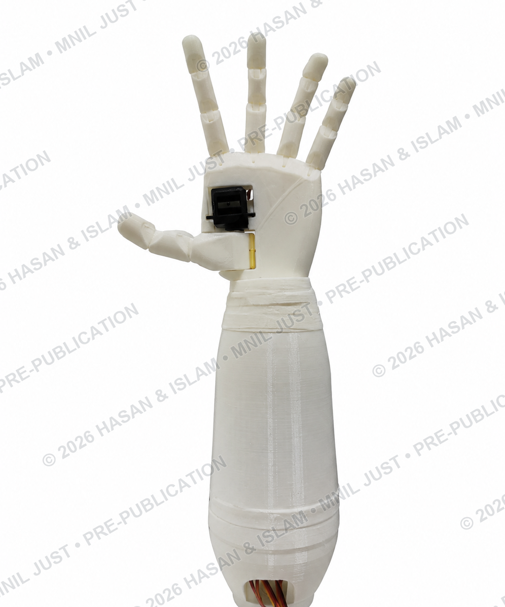
Fig 10.1: Assembled PLA+ chassis with internal servo horns, non-elastic nylon synthetic tendons, and thumb opposition linkage.
| Digit / Joint | Servo Type & Stall Torque | PCA9685 Ch | Angular Calibration |
|---|---|---|---|
| Index Finger | MG996R Metal Gear (11 kg·cm) | Ch 3 | 0° (Ext) → 115° (Flex) |
| Little Finger | MG996R Metal Gear (11 kg·cm) | Ch 8 | 180° (Ext) → 70° (Flex) |
| Thumb Flexion | MG996R Metal Gear (11 kg·cm) | Ch 10 | 180° (Ext) → 75° (Flex) |
| Thumb Opposition | SG90 Micro Servo (1.8 kg·cm) | Ch 12 | 180° (Ext) → 50° (Opp) |
| Middle & Ring (Coupled) | MG996R Metal Gear (11 kg·cm) | Ch 15 | 0° (Ext) → 120° (Flex) |
Tendon Actuation Mechanics: High-tensile non-elastic braided nylon fishing line acts as synthetic tendons routed through internal phalangeal pulleys. Unidirectional tension drives flexion, while relaxation of cable tension reverts digits to extension without complex return springs.
Additive Manufacturing Specs: Fabricated at 0.2mm layer height with 40% gyroid infill for structural load-bearing components (palm frame, servo brackets) and 20% infill for distal phalanges to minimize rotational inertia.
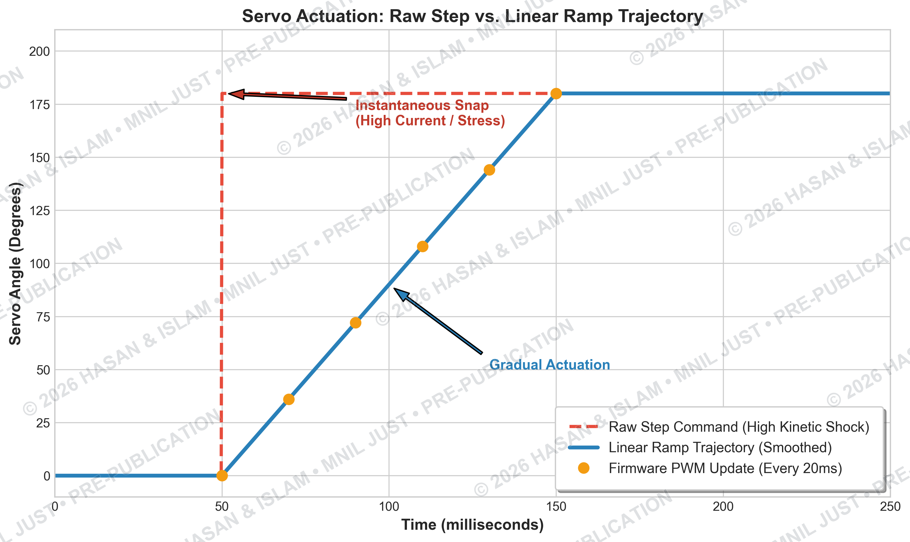
Fig 10.2: Calibrated mechanical transition profile illustrating kinematic settling time and overshoot prevention.
Electromechanical Stability & Physical Mimicry
While the on-device 1D-CNN generates a new classification prediction every 50ms, mapping frame-by-frame outputs directly to motor positions is mechanically disastrous in physical prosthetics. Transient sEMG noise spikes or borderline probability fluctuations cause high-frequency actuator jitter, rapid servo hunting, and dropped objects.
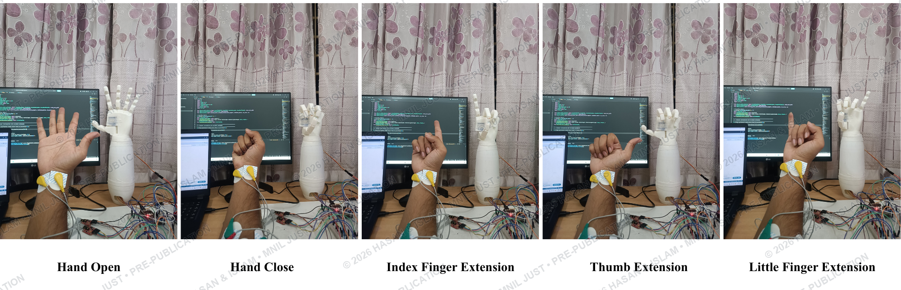
Fig 11.1: Live physical actuation trial. The wearer performs voluntary biological contractions (left), driving synchronous real-time tendon actuation on the 3D-printed prosthetic arm (right).
A rolling temporal queue buffers the 20 most recent consecutive inference outputs. At a 50ms stride, this 20-sample window corresponds to a continuous 1.0-second rolling consensus horizon that filters out transient classifier flickers.
A kinematic state transition command is dispatched to the PCA9685 driver only if the candidate gesture commands the absolute mathematical majority of the 20-sample queue, guaranteeing that momentary bioelectrical disturbances cannot initiate movement.
While majority voting introduces a short intentional buffering delay during deliberate gesture transitions, it eliminates mechanical servo chatter and ensures the rock-solid positional stability essential for holding heavy or fragile everyday objects.
Generalization Methodology & Crosstalk Dynamics
Evaluating prosthetic machine learning algorithms purely on standard within-subject training-test partitions gives an artificially optimistic view of performance. To rigorously characterize how models behave when transferred to completely novel users, this research implemented two complementary cross-validation strategies.
Data pooled and partitioned across 5 folds stratified by gesture class. Data from all 20 participants appears in both training and test sets. This establishes the theoretical upper bound of the architecture when prior calibration knowledge of the wearer's neuromuscular profile is available.
The model is trained on 19 participants and evaluated exclusively on the unseen 20th participant across 20 distinct iterations. This protocol rigorously simulates zero-shot clinical deployment onto an uncalibrated user, exposing the impact of inter-subject domain shift.
The Physiological Basis of Muscle Crosstalk
A fundamental scientific finding from the cross-validation analysis is that gross synergistic grasps (Rest, Hand Close, Hand Open) consistently demonstrate high stability because they recruit large, antagonistic muscle groups across opposite sides of the forearm. In contrast, individual digit extensions (Index, Thumb, Little) originate from closely packed or shared muscle bellies (such as the Extensor Digitorum Communis on the dorsal side). In a sparse 3-channel configuration, bioelectrical crosstalk between neighboring tendon slips is a physical constraint of human anatomy. This dictates that accessible prosthetics should prioritize robust functional grasps over single-digit isolation, and reinforces the clinical necessity of user-specific calibration before deployment.
*Note: In accordance with journal embargo guidelines, granular numerical benchmark tables and per-subject accuracy distributions are withheld from this public case study.*
Bill of Materials (BOM) & Economic Feasibility
A core objective of this research is democratizing intelligent bionic prosthetics for amputees in low- and middle-income countries. To validate that the complete physical prototype can be fabricated for under $150 USD, the itemized Bill of Materials reflects retail purchase costs during prototype assembly.
| # | Component & Technical Rating | Qty | Unit Cost (BDT) | Total Cost (BDT) |
|---|---|---|---|---|
| 1 | ESP32-S3 N16R8 Development Board (Dual-Core 240MHz, 16MB Flash, 8MB PSRAM) | 1 | 1,350 | 1,350 |
| 2 | Advancer Technologies EMG Sensor Module V3 (Analog Front-End) | 3 | 2,550 | 7,650 |
| 3 | Hycellent YB 101 Ag/AgCl Disposable Hydrogel Surface Electrodes | 9 | 10 | 90 |
| 4 | MG996R Metal Gear High-Torque Servo Motor (11 kg·cm stall torque) | 4 | 395 | 1,580 |
| 5 | SG90 Micro Servo Motor for Thumb Opposition (1.8 kg·cm) | 1 | 135 | 135 |
| 6 | PCA9685 16-Channel 12-Bit PWM Driver (I2C Interface) | 1 | 450 | 450 |
| 7 | XL4016 High-Power DC-DC Buck Converter (8A continuous, 200W) | 1 | 190 | 190 |
| 8 | 11.1V 3S LiPo Battery (1200 mAh, High-Discharge Motor Rail) | 1 | 1,750 | 1,750 |
| 9 | 9V Alkaline Batteries (6F22, Dual Bipolar Sensor Supply) | 2 | 48 | 96 |
| Total Hardware Fabrication Cost (BDT): | 13,291 BDT | |||
| Approximate Equivalent in USD ($): | ~$115.00 USD | |||
*Conversion rate: 1 USD ≈ 115.5 BDT at time of procurement. Excludes PLA+ filament material cost (~$8 USD for chassis). Proves that intelligent, high-dexterity bionic arms can be engineered well below the $150 USD target threshold.*
Limitations & Future Research Roadmap
- Able-Bodied Cohort: Evaluated exclusively on able-bodied participants; transradial residual limbs with muscle atrophy, skin scars, and relocated bellies require clinical validation.
- Binary Open-Loop Control: Gestures execute discrete binary kinematic transitions without proportional grip force modulation based on contraction amplitude.
- Sensory Feedback Absence: Operates without tactile haptic feedback (fingertip pressure sensors), requiring wearers to rely entirely on visual confirmation.
- On-Device Transfer Learning: Execute rapid 2-minute user calibration by computing localized gradient updates exclusively on the dense classification layer via ESP32-S3 SRAM.
- Closed-Loop Haptic Feedback: Embed Force-Sensitive Resistors (FSRs) in 3D fingertips coupled with residual limb vibrotactile actuators to convey grip pressure.
- Monolithic PCB Integration: Consolidate the ESP32-S3, differential instrumentation amplifiers, and power regulator into a single custom PCB to fit within a prosthetic socket.
- Clinical Amputee Trials: Transitioning prototype from laboratory testing to clinical trials with transradial amputees to assess daily wearability and socket mechanics.